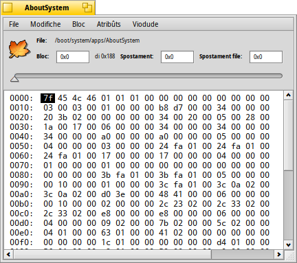
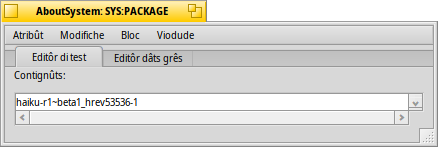

Scandai dal disc
Scandai dal disc
| Deskbar: | ||
| Posizion: | /boot/system/apps/DiskProbe | |
| Impostazions: | ~/config/settings/DiskProbe_data |
Scandai dal disc al è un editôr esadecimâl par visualizâ e alterâ i dâts di un file o su un dispositîf a nivel di byte. Al è un strument une vore di bas-nivel e al à duncje il potenziâl par fâ dams gruès se no si sta atents!
Cuant che tu inviis Scandai dal disc ti vignarà domandât prin di dut il file o il dispositîf dulà lavorâ. Dopo di chel ti si presente cun cheste interface:

La viodude principâl e mostre simpri un bloc di dâts, la sô dimension e pues jessi justadecun . Ae çampe al sta il spostament (offset) dal inizi dal bloc, tal mieç i dâts come valôrs esadecimâi e a diestre il stes ma come simbul ASCII.
Tu puedis spostâti di un bloc a chel altri cul cursôr de sbare parsore o cun ALT ← e ALT → e par passâ tra la colone esadecimâl e chê ASCII cun TAB.
nol mostrarà dome la selezion cu la codifiche endian diferente (e in esadecimâl o decimâl, stabilît di ), ma ancje al interpretarà la selezion tant che un spostament di bloc che a chel tu puedis saltâi indaûr. Al vignarà mostrât in grîs se la posizion e je fûr dal file/dispositîf.
Cheste e je une funzionalitât utile soredut cuant che si cjale i filesystem, viodût che dispès a contegnin pontadôrs a altris blocs.
Se il file che tu stâs scandaiant al inclût atribût, il menù dai al pues jessi doprât par vierzi cualsisei di chei intun gnûf barcon di Scandai dal disc. Chi al è l'atribût SYS:PACKAGE de aplicazion Informazions su Haiku :

In base al gjenar di atribût, tu varâs une schede di modifiche divierse in bande al simpri presint Editôr dâts grês. Par esempli, a son editôrs par stringhis e gjenars MIME opûr un visualizadôr di icone pal atribût de icone vetoriâl.